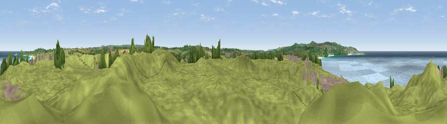

Viewpoint near Phillack
#11300 in England · top 29% of its area beats it · near PhillackWhere it is
The exact computed spot (SW 56625 39175). Click the marker for map links.
The view, rendered

A 360° render of this exact spot computed from the terrain model, tree cover and land cover — summer colours, afternoon light, calibrated against photographs of famous viewpoints. Real trees, hedges and buildings will differ in detail.
The panorama
Grey silhouette: terrain skyline in each direction (720 bearings, Earth curvature and refraction included). Dashed green: skyline with trees (+15 m) and buildings (+8 m) as obstacles. Blue strip: how far the ground is visible on each bearing.
Where the view opens
Wedge length = distance to the farthest visible ground on that bearing (vegetation-aware). Rings at 10, 25 and 50 km.
What fills the view
67% grassland · 21% water · 4% cropland · 4% woodland · 3% built-up
Angular shares of the visible panorama (visual magnitude), not map area. Landscape diversity 0.43 (0–1 Shannon).
Key numbers
More beautiful places nearby
The staircase of upgrades: each row has a higher view potential than everything closer. Driving times are estimates from straight-line distance, calibrated against real road routing — check an actual route before setting out.
| Place | Direction | Drive | Score |
|---|---|---|---|
| Viewpoint near Connor Downs | NE · 2 km | ~5 min | 64.7 |
| Viewpoint near Connor Downs | NNE · 4 km | ~9 min | 67.2 |
| Viewpoint near Lelant Saltings | SW · 6 km | ~12 min | 79.2 |
| Viewpoint near Halsetown | W · 7 km | ~15 min | 82.0 |
| Rosewall Hill | W · 8 km | ~16 min | 88.0 |
| Viewpoint near Combe Martin | NE · 150 km | ~173 min | 88.9 |
| Holdstone Hill | NE · 151 km | ~174 min | 90.2 |
| The Knoll | ENE · 202 km | ~220 min | 91.0 |
50.20244, -5.41186 · source: screening · position refined by local search. Computed location — check access rights before visiting.